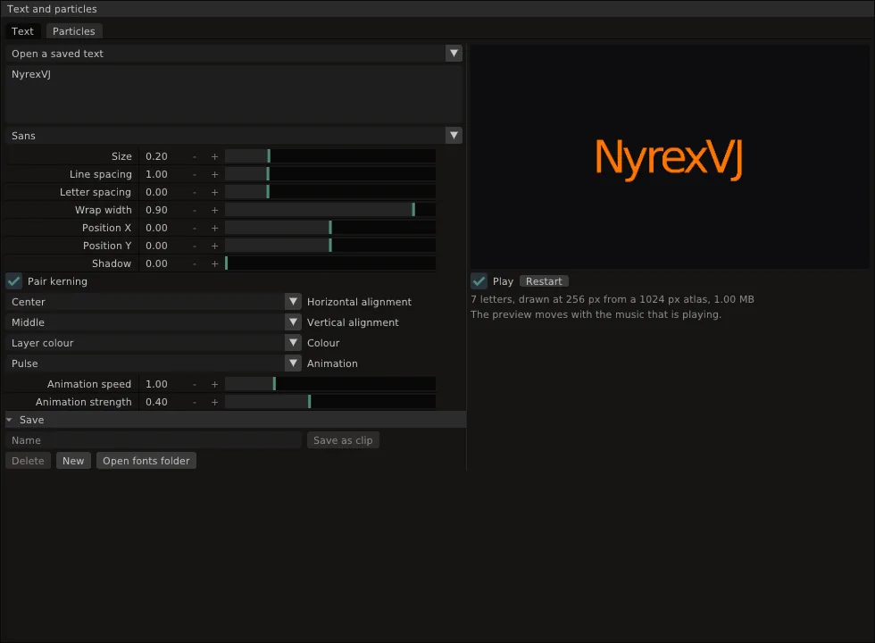
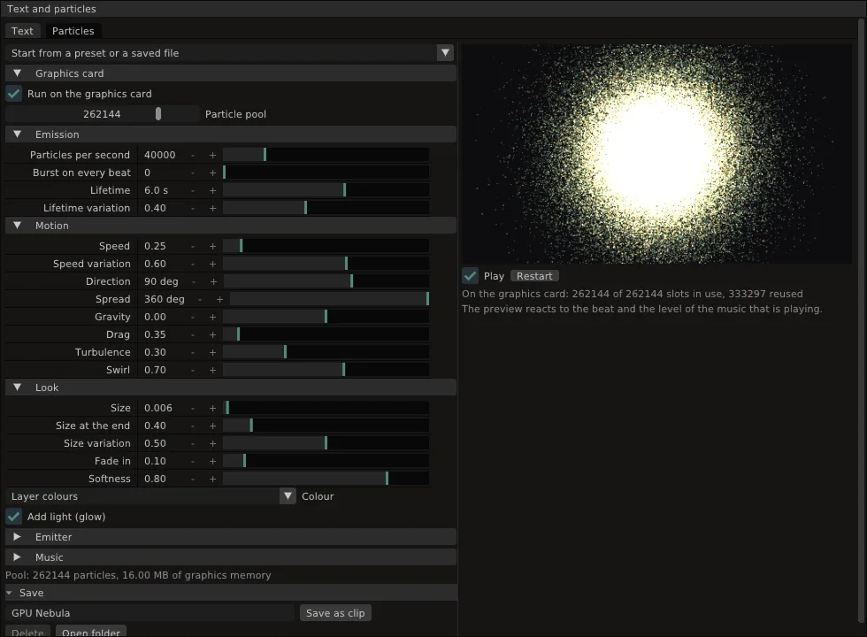

Contents
Getting started
- Welcome to NyrexVJ
- Installing and first start
- The window at a glance
- Your first show in five minutes
Playing visuals
- The clip grid
- Decks and transitions
- Layers and blending
- The Clip window
- Effects
- The Library
- Presets and sessions
- The Master window
Music and motion
Your own content
- Video and image clips
- Your own shaders
- 3D models
- The Clip Creator
- Text, particles and effect chains
- The node effect editor
- Live sources: Spout, NDI and cameras
Output and recording
Live control and shows
- Control: MIDI, OSC and the web page
- Show sync and timecode
- The show timeline
- Stage: DMX, VRSL and VRChat
- Plugins
Reference and help
Manual / Your own content
Text, particles and effect chains
Three tools that make your own content without a shader: text clips for names and messages, particle clips for sparkle, snow and confetti, and effect chains that save the effects of a layer so you can use them again. Text and particles are normal clips. You put them in a cell, play them on any layer, add effects, blend them over other layers and send them to every output like any other clip.
#The window
Creator, Text and particles... opens one window with two tabs, Text and Particles. Creator, Effect chains... opens the window for chains, and the same window opens from the button Effect chains... under the effect slots of a layer or of the master.
- The top of the Text tab lets you open a saved text or start a new one, and the top of the Particles tab lets you start from one of the built-in clips or a file you saved. The settings are below, and a live preview is next to them that reacts to the music that is playing.
- Save as clip writes the file and puts the clip in the Library under the filter Generators within a moment. If the clip is already playing on a layer, it changes to the saved version while it plays.
- Delete removes a file after you confirm it, and Open folder shows the folder with your files.


#Text clips
A text clip shows a text with a background that is see-through, so the layer below stays visible around the letters. It is saved as a small file in the texts folder and shows in the Library as Text: name.
| Setting | What it does |
|---|---|
| The text box | Up to 1000 characters and 40 lines. Line breaks stay where you put them |
| Font | The fonts NyrexVJ found, and your own fonts from the fonts folder |
| Size | How tall the text is, as a share of the picture height |
| Horizontal and vertical alignment | Left, Center, Right and Top, Middle, Bottom |
| Line spacing, Letter spacing, Pair kerning | Space between lines, between letters, and the fine fitting of letter pairs |
| Wrap width | Lines break at this width. At 0 the text is not wrapped |
| Position X and Y, Shadow | Where the text sits and how strong the shadow is |
| Colour | The colours of the layer, White or Rainbow |
| Animation, Animation speed, Animation strength | No animation, Typewriter, Fade in, Slide up, Wave, Pulse, Follow the audio level or Bounce, and how fast and how much |
The animations run on the clock of NyrexVJ, so they stay in step with the beat. Follow the audio level makes the text grow with the music.
#Fonts and characters
Put your own .ttf, .otf or .ttc files into the fonts folder (the button Open fonts folder shows it). NyrexVJ also uses the fonts of your system. Text is read as Unicode, so umlauts, accents, symbols such as a music note, Greek, Cyrillic and Japanese or Chinese characters are all possible, as long as the font you chose contains them.
#Particle clips
A particle clip shows many small soft dots that are born at a place, move and fade away. Six clips come with the program (Sparks, Snow, Embers, Fountain, Confetti and Bubbles). Your own are saved in the particles folder and show in the Library as Particles: name.
| Group | Settings |
|---|---|
| Emission | Particles per second, Burst on every beat, Lifetime and its variation |
| Motion | Speed and its variation, Direction, Spread, Gravity, Drag, Turbulence, Swirl |
| Look | Size, Size at the end, Size variation, Fade in, Softness, Colour, Add light (glow) |
| Emitter | Shape (Point, Line, Ring, Box), Origin X and Y, Extent |
| Music | Level adds particles, Level grows particles, Level speeds particles up |
| Other | Random seed, Restart, Play |
The beat fires the burst, even when Particles per second is 0, and the loudness of the music drives the three Level sliders. With the same file and the same random seed you get the same movement every time, which is useful when you want a look to repeat.
#GPU particles
Some particle clips can run on the graphics card instead of the processor. The card then keeps every particle itself and moves all of them in one step per frame, so it can hold far more than the 16,384 of a normal particle clip: from 1,024 up to 1,048,576. Three built-in clips use it, GPU Nebula, GPU Beat Burst and GPU Rain. It is experimental and off until you turn on Settings, Performance, Text and particles, Experimental GPU particles, because nobody has tried it on a real graphics card yet.
| Setting | What it does |
|---|---|
| Run on the graphics card | In the Particles tab under Graphics card. Turns a particle clip into a GPU clip, and the file remembers it |
| Particle pool | How many particles the card keeps, 1,024 to 1,048,576. When the pool is full, the oldest particles are reused for new ones |
| Swirl | Pushes the particles around the emitter. It works on the processor too |
| Particles per second, Burst on every beat | Up to 200,000 a second and 100,000 on every beat for a GPU clip |
| Graphics memory for GPU particles | In Settings, Performance. All GPU clips together stay inside this budget, 8 to 512 MB, 64 MB at the start |
Every particle costs 64 bytes of graphics memory, so 64 MB hold about a million particles. A clip that does not fit into the budget gets a smaller pool, and if not even the smallest pool fits, it runs on the processor.


#Limits that protect the show
Text and particles can never take over the computer. A file cannot raise any of these limits, and a clip that is not on a layer costs nothing.
| What | Limit |
|---|---|
| Particles alive at once | Settings, Performance, Text and particles, Particle limit per layer: 64 to 16,384, default 2048. At 24 bytes each, 16,384 particles are 384 KiB of graphics memory |
| Newer particles when the limit is reached | Dropped, and the window shows how many, so the picture stays smooth |
| A text | Up to 1000 characters, 40 lines and a picture of the letters of at most 4 MiB, made in the background so a long text never stops the show |
| GPU particles | Settings, Performance, Text and particles, Graphics memory for GPU particles: 8 to 512 MB, 64 bytes per particle, up to 1,048,576 per clip and 200,000 new particles a second |
| Files | 32 KiB each, 64 of each kind, names up to 64 bytes |
#Effect chains
A chain is the four effects of a layer, or of the master, saved with their settings and their reaction to the music. It is a recipe for the four effect slots that are already there, not a new kind of effect.
- Set up the effects of a layer, then press Effect chains... under the effect slots.
- Under Save the current effects as a chain give it a name and a short description and press Save chain.
- To use a chain later, pick the layer or the master under Applies to, select the chain and press Apply. It replaces the four slots of that layer and Ctrl+Z undoes it.
- Search by name, description or effect finds chains, and the preview shows the selected chain on a test picture before you apply it. Delete asks first.
Export copies a chain to a path you type and Import reads a .nyxchain file from a path. If a chain uses an effect that does not exist on your computer, for example a node effect from somebody else, the window names it, keeps the other effects and leaves that slot empty. A chain file is data: it is checked when it is read and nothing in it is ever run.

#Files and sharing
Everything in this chapter is a small text file in the data folder. You can copy it to another computer or send it to a friend.
| File | Folder | What it holds |
|---|---|---|
.nyxtext | texts | A text clip |
.nyxpart | particles | A particle clip |
.nyxchain | chains | A chain of four effects |
.ttf, .otf, .ttc | fonts | Your own fonts |
Show packages do not pack these files yet. The plan of an export lists text and particle clips as clips the other computer has to have, so copy the files by hand.
Found a mistake or something missing? Tell us on GitHub. The same manual is built into the program, so you have it without internet. Open it with F1 or from the Help menu, then User manual.